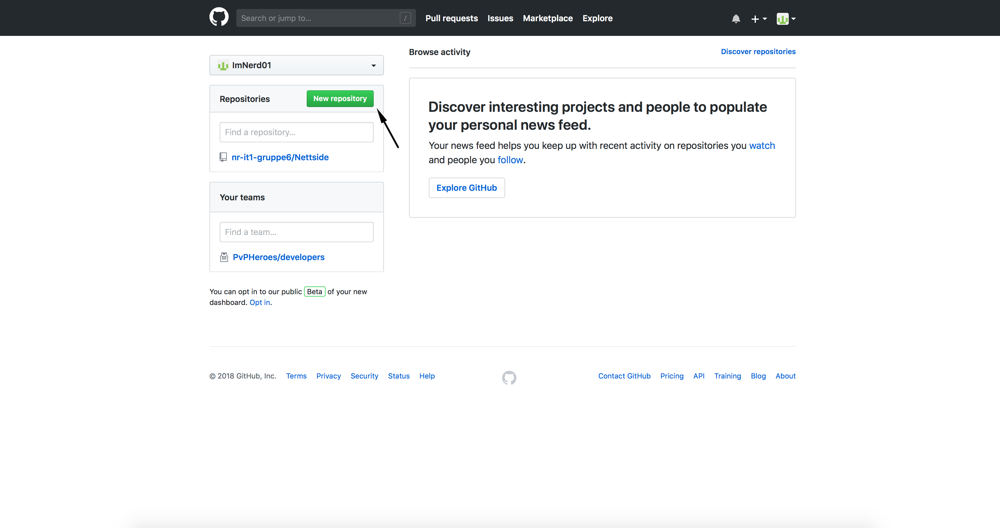
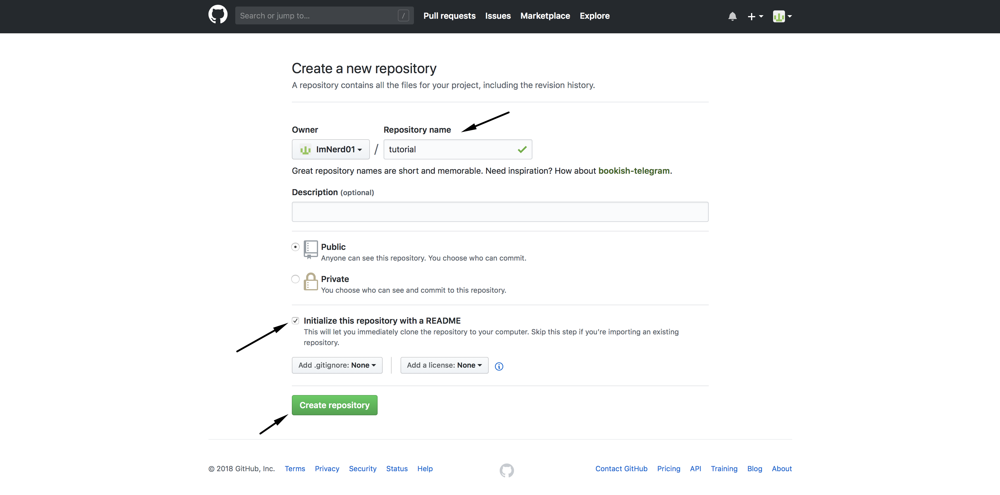
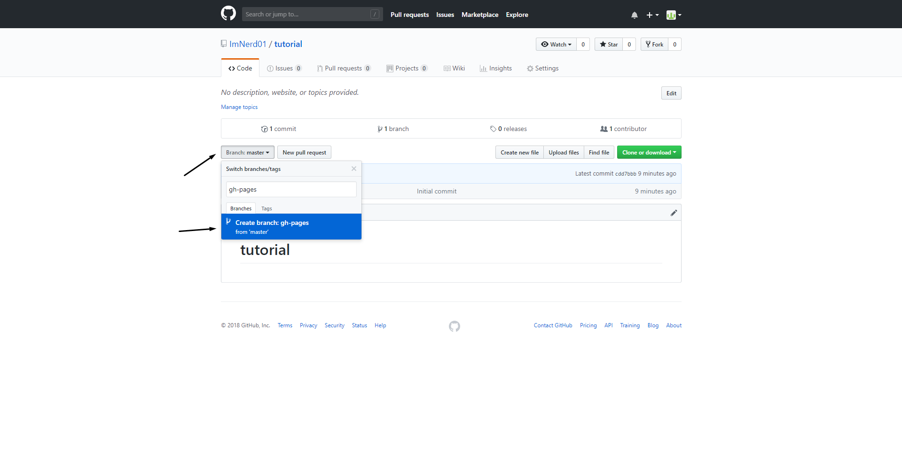
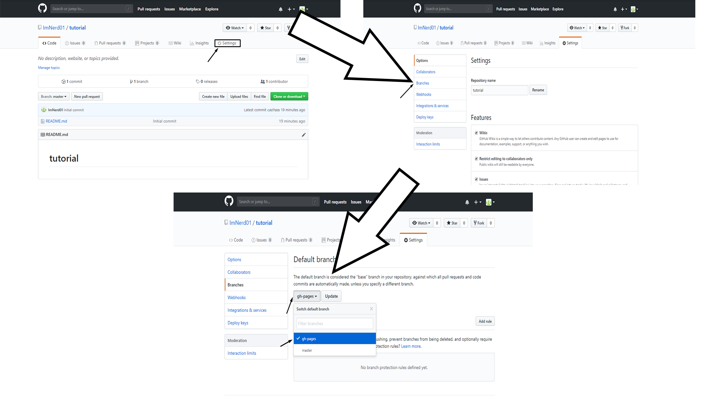
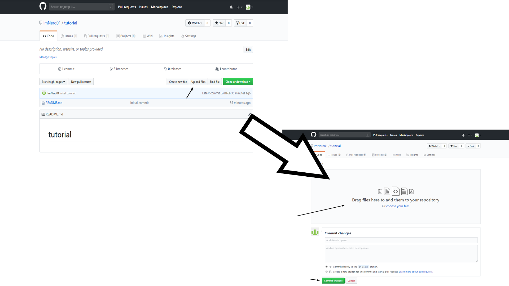
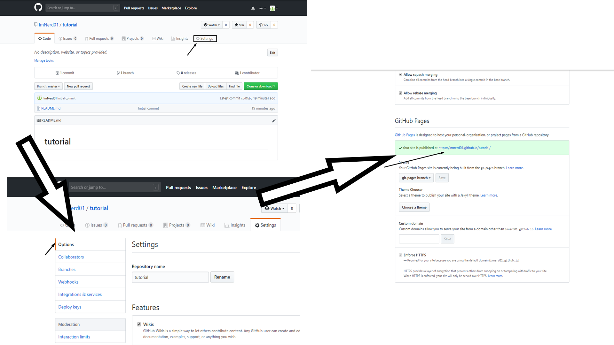

For å kunne lage din egen nettside på github, må du ha din egen bruker. Om du ikke har din egen bruker kan du klikke her for å se hvordan du kan lage en bruker.
Når du har logget inn på din GitHub-bruker, må du lage et nytt oppbevaringssted for å kunne publisere din nettside.
For å gjøre dette, må du være innelogget på din GitHub bruker, også trykke på New repository.

Så må du velge hva ditt oppbevaringssted skal hete. Vi har valgt tutorial, bare for å velge et navn.
Du kan også velge å legge til en beskrivelse, og velge om det skal være offentlig eller privat.
Husk også å huk av for Initialize this repositry with README.
Så kan du trykke på Create repository for å komme videre.

For å kunne publisere nettsider via GitHub, må man sette opp en branch i oppbevaringsstedet.
Dette gjøres ved å trykke på Brach: master, og deretter skrive inn og velge branch ved navn gh-pages.

Når dette er gjort, må man velge denne som default branch, som gjøres ved å trykke på Settings, så på Branches, også velge default branch til å være gh-pages.

For å laste opp din html-fil, må du trykke på Upload files, deretter legge inn din fil, også trykke på Commit changes.
HUSK å gi din html-fil navnet index.html.

For å finne linken til din nettside, trykk på Settings, så på Options, også bla ned til GitHub Pages.
Her vil linken til din nettside ligge.
